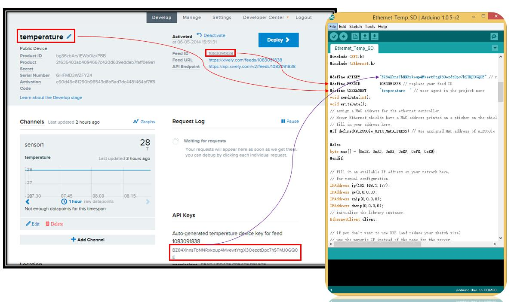
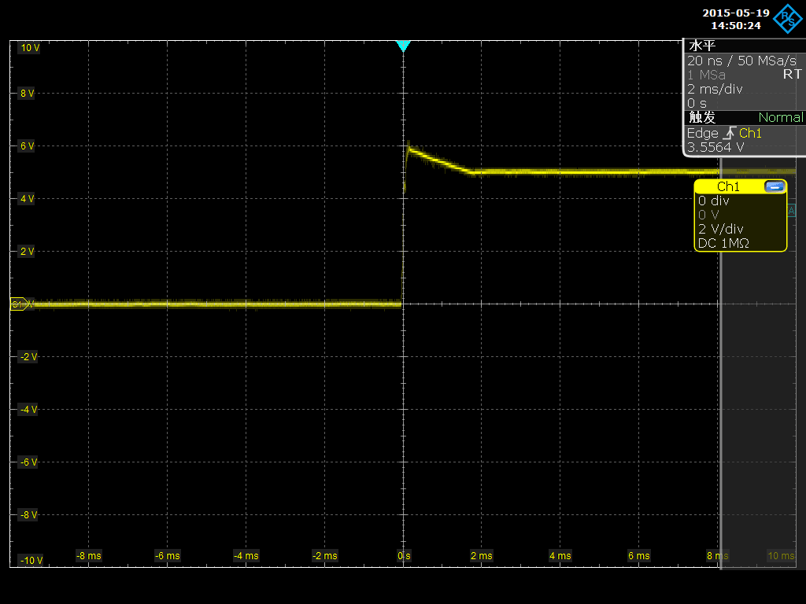

Seeeduino GPRS is an IoT panel, that can connect to the internet through GPRS wireless network. It can make/answer voice calls and send/receive SMSes. It also supports FM Radio function and Bluetooth communication. Seeeduino GPRS is based on ATmega32U4 and SIM800H. ATmega32U4 is a microcontroller compatible with Arduino. SIM800H supports Quad-band 850/900/1800/1900MHz. It can transmit voice, SMS and data with low power consumption. SIM800H also brings some extra features like Bluetooth and FM Radio. Its low power design results in a current as low as 0.1mA in sleep mode.

| Status | SIM800H behavior | |
|---|---|---|
| Off | SIM800H is not running | |
| 64ms on/800ms off | SIM800H not registered the netwark | |
| 64ms on/3000ms off | SIM800H registered the netwark | |
| 64ms on/300ms off | SIM800H communication is established | |
Note: To test the GPRS function, a headphone and a SIM card would be required.
Below is the introduction of how to play with a Seeeduino GPRS module. Please take the example sketch in the library as reference.
Seeeduino GPRS offers the function of a mobile phone such as making/receiving voice calls, sending/receiving SMSes, make a TCP connection etc. You can find them in examples. Here is a brief introduction.
Open the example sketch GPRS_CallUp in libraries/Seeeduino_GPRS/example/GPRS_CallUp/, replace the phone number in callUp function, then compile the sketch and upload it to your board. Seeeduino GPRS will call the number specified in the code.
#include <gprs.h> #include <SoftwareSerial.h> GPRS gprs; void setup() { Serial.begin(9600); Serial.println("GPRS - Call up Test..."); gprs.preInit();//power on SIM800 delay(1000); while(0 != gprs.init()) { //gprs init delay(1000); Serial.print("init error\r\n"); } Serial.println("Init success, start to call..."); gprs.callUp("150****9566"); } void loop() { //nothing to do }
Just like calling, an SMS can be sent with Seeeduino GPRS. Open the example sketch GPRS_SendSMS in libraries/Seeeduino_GPRS/example/GPRS_SendSMS/, and replace the phone number and message in sendSMS function, then compile the sketch and upload it to your board. Seeeduino GPRS will send the message to the number specified in the code.
#include <gprs.h> #include <SoftwareSerial.h> GPRS gprs; void setup() { Serial.begin(9600); Serial.println("GPRS - Send SMS Test ..."); gprs.preInit(); delay(1000); while(0 != gprs.init()) { delay(1000); Serial.print("init error\r\n"); } Serial.println("Init success, start to send SMS message..."); gprs.sendSMS("130****3364","hello,world"); //define phone number and text } void loop() { //nothing to do }
If someone calls or send a message to you, Seeeduino GPRS can also answer the call or read the message out. Open the example sketch GPRS_LoopHandle in libraries/Seeeduino_GPRS/example/GPRS_LoopHandle/, then compile the sketch and upload it to your board, the Seeeduino GPRS will poll to check if there is an incoming call or SMS. If there is an incoming call, Seeeduino GPRS will answer the call automatically. If there is an incoming SMS, Seeeduino GPRS will show the message in Serial Monitor.
#include <gprs.h> #include <SoftwareSerial.h> #include <stdio.h> char gprsBuffer[64]; int i = 0; char *s = NULL; int inComing = 0; GPRS gprs; void setup() { Serial.begin(9600); Serial.println("GPRS - LoopHandle Test..."); gprs.preInit(); while(0 != gprs.init()) { delay(1000); Serial.print("init error\r\n"); } Serial.println("Init success, start to monitor your call or message..."); } void loop() { if(gprs.serialSIM800.available()) { inComing = 1; }else{ delay(100); } if(inComing){ gprs.readBuffer(gprsBuffer,32,DEFAULT_TIMEOUT); Serial.print(gprsBuffer); if(NULL != strstr(gprsBuffer,"RING")) { gprs.answer(); }else if(NULL != (s = strstr(gprsBuffer,"+CMTI: \"SM\""))) { //SMS: $$+CMTI: "SM",24$$ char message[MESSAGE_LENGTH]; int messageIndex = atoi(s+12); gprs.readSMS(messageIndex, message,MESSAGE_LENGTH); Serial.print(message); } gprs.cleanBuffer(gprsBuffer,32); inComing = 0; } }
Seeeduino GPRS has the ability to access internet via GPRS network. We will show a example.This example can upload your sensor data to Xively and store it up to SD Card.
Part List : Seeeduino GPRS , Sim Card , Base Shield , Grove - Temperature
1. Mount Base Shield to your Seeeduino GPRS and connect Grove - Temperature to A5.
2. Connect Arduino to PC via USB cable;
1. If you haven't an account,you should Register an account in xively and login.
2. Now,we can click Develop to add a device.

3. Download the library：Seeeduino GPRS Library.
4. Unzip and put it in the libraries file of Arduino IDE by the path: ..\arduino-1.0.1\libraries.
5. Restart the Arduino IDE.
6. Open the example "GPRS_ConnectTCP" via the path: File --> Examples --> Seeeduino_GPRS_master --> GPRS_ConnectTCP. you need to modify some parameters.

7. Upload the program to Arduino. If you do not know how to upload code, please click [here],please pay attention to that driver of Seeeduino GPRS is Leonardo.
Now,we will show result.
1. Open Serial Monitor,you will see some temperature information.
2. What's more, we can see information from web.
Is it very easy ? you can begin your project.
Seeeduino GPRS has a FM radio function. Open the example sketch FM_Test in libraries/Seeeduino_GPRS/example/FM_Test/, and connect a button to your board, then compile the sketch and upload it to your board, Seeeduino GPRS functions like an FM radio. Even the channel can be changed with the button.
#include <fm.h> #include <SoftwareSerial.h> int channelButton = 5; //used for changing channel FM fm; void setup() { pinMode(channelButton,INPUT); Serial.begin(9600); Serial.println("FM Test..."); fm.preInit(); while(0 != fm.powerOn()){ Serial.println("FM power on failed, try again..."); delay(2000); } fm.setVolume(6); //0,1,2,3,4,5,6 fm.scanChannel(); Serial.println("FM init success"); } void loop() { while(HIGH == digitalRead(channelButton)){ delay(50); } Serial.print("change Channel\r\n"); fm.channelNext(); while(LOW == digitalRead(channelButton)){ delay(50); } }
Seeeduino GPRS can be used as a bluetooth device, but it is still not very stable yet. There are two examples sketches in library. The first one is Bluetooth AT Command, you can send AT command to Seeeduino GPRS through it, and the other one is Bluetooth_Communicate, you can communicate with Seeeduino GPRS in SPP profile with it, but it may go wrong while connecting to your bluetooth device or mobile. Below is the code of Bluetooth AT Command
#include <bluetooth.h> #include <SoftwareSerial.h> #define DEFAULT_TIMEOUT 5 #define BT_BUF_LEN 32 BlueTooth bluetooth; char bluetoothBuffer[BT_BUF_LEN]; int start = 0; void setup() { Serial.begin(9600); Serial.println("Bluetooth AT Command Test..."); bluetooth.preInit(); delay(3*1000); while(0 != bluetooth.powerOn()){ //bluetooth PowerOn Serial.println("bluetooth power on failed, try again..."); delay(2000); } } void loop() { if(bluetooth.serialSIM800.available()) { start = 1; }else{ delay(500); } if(start){ //bluetooth.cleanBuffer(bluetoothBuffer,64); bluetooth.readBuffer(bluetoothBuffer,BT_BUF_LEN,DEFAULT_TIMEOUT); if(NULL != strstr(bluetoothBuffer,"+BTPAIRING:")){ bluetooth.acceptPairing(); } if(NULL != strstr(bluetoothBuffer,"+BTCONNECTING:")){ bluetooth.acceptConnect(); } start = 0; } }
There's a hardware bug in Seeeduino GPRS V1.0. When an external power input, there's very short 6V at the 5V pin, last about 2ms.
So we recommend that don't use the barrel jack to power the system, or there's risk to destroy the device that connected to 5V.
As show at the below image:

If you need to power the system via the barrel jack anyway, there's a solution, remove Q9 on the board.
But you can't power the system via USB anymore.
We had considered to fix the bug already, but will not come out very soon.(Data now is Jan26, 2016)
If you want to make some awesome projects by Seeeduino GPRS, here's some projects for reference.
More than 2 years ago we had made ArduinoPhone.
ArduinoPhone was big and it's difficult for the beginner to make one. As there's a step to make the charge circuit.
And I had heard so many voice that when will you make ArudinoPhone 2.0 for this 2 years. I think I really should make it someday.
It's lucky that I have got some free time for the past month, so I spend about 3 weekend to design it. And now it's done. Before you read about the steps, let's view some featured of ArduinoPhone2.0.